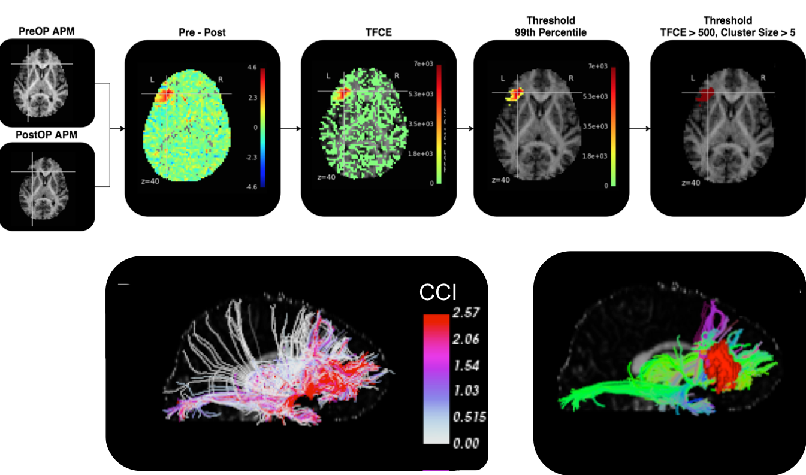
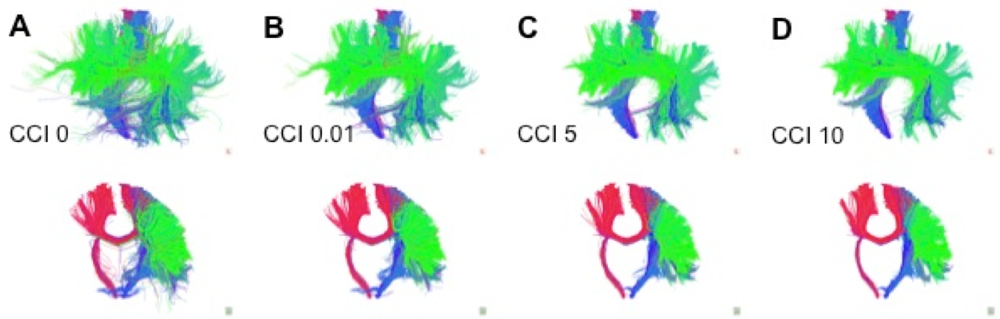

Kesshi Jordan
Projects
Characterizing AV1451 Binding (Tau-PET) in Nonfluent Variant Primary Progressive Aphasia

Investigating AV1451 binding in nonfluent variant primary progressive aphasia. The goal is to model network spread of Tau using AV1451 PET and Diffusion Tractography
Diffusion MRI Fiber Tracking to Model White Matter Structure in Children with Dyslexia
This is a project with the UCSF Dyslexia Center that studies how white matter structure relates to reading abilities. I am working on a project to automatically segment language-related white matter fascicles from a whole-brain tractography dataset to replace the painstaking manual work of a neuro-anatomist.
Neurosurgical Planning for Tumor Resection with Diffusion MRI

Developed image-processing pipeline robust to mass effect and operative shift to automatically estimate connectivity of acute white matter injury Preprint ; Code will be available in NIPYPE
Systems-Based Neurotechnology for Emerging Therapies (SUBNETS)
Used diffusion magnetic resonance imaging (dMRI) tractography to study the neurocircuitry of anxiety and depression as part of the SUBNETS initiative.White Matter-Informed Radiation Therapy Planning
Anisotropically modify Radiation Therapy treatment volume in brain tumor patients based on modeling of underlying white matter structure. Code available in DIPY
Tractography Streamline Outlier Rejection

Cluster Confidence Index: pathway confidence metric based on the relative pathway support conferred by surrounding streamlines in a tractography dataset Publication ; Code
Reliability of Tractography Manual Segmentations
img src="images/reliability.png" class="img2">
Cluster Confidence Index: pathway confidence metric based on the relative pathway support conferred by surrounding streamlines in a tractography dataset Publication ; Code
Cluster-Based Streamline Editor
img src="images/cluster_clean.png" class="img2">
Cluster-viz: A cluster-based tractography segmentation tool implemented as a webapp Publication ; Code